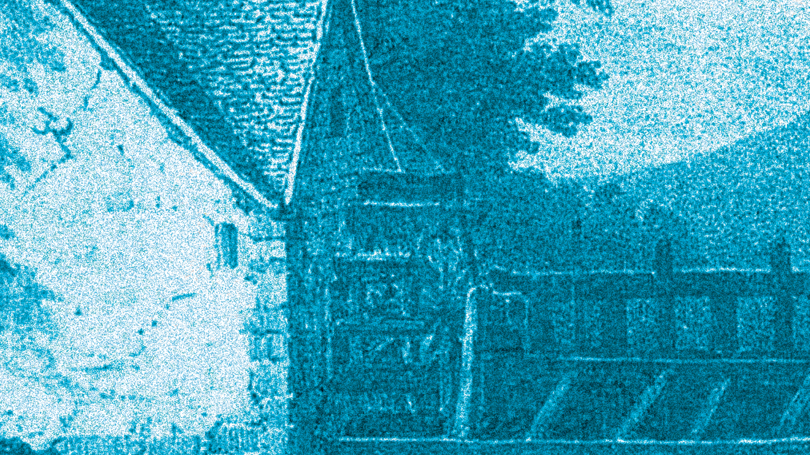
Maison de la Culture de Bourges
brief - Saison culturelle 2026-2027
date - janvier au mars 2026
établissement - L’Université Polytechnique Haut-de-France, Nord, France
cahier des charges
- Le visuel de la saison
- Déclinaisons des supports print : Brochure, Affiche de spectacle, Billet de spectale
- Déclinaisons digitales : Site internet, Réseaux sociaux
compétences acquises
- Déclinaisons sur différents types de supports
- Epérimenté avec les textures visuelles
conception
Pour la saison 2026 - 2027, la direction artistique propose d’explorer le passé de
Bourges, en utilisant des ressources issues de cartes postales de la période de la
révolution industrielle. Des milliers de ressources numérisées, conservées par les
archives départementales de Cher, constituent une mémoire visuelle qui documente la
transformation de la ville jusqu’à nos jours.
La problématique s’interroge sur comment la ville de Bourges peut être représentée
aujourd’hui au-delà de son image. Le but est de moderniser l’image de la ville,
pour une cible départementale aux alentours. Le patrimoine visuel de la ville est souvent associé à des monuments emblématiques
comme la Cathédrale Saint-Étienne de Bourges, ce qui peut conduire à une vision
figée dans le temps.
L’enjeu est donc de proposer un nouveau regard plus contemporain, en mettant en
lumière les images de la vie quotidien, telles qu’elles figurent sur les cartes postales.
Favorise une expérience émotionnelle à travers les récits et les traces du quotidien du passé.
L’importance est de créer un lien entre passé et présent, permettant au public de ressentir
et se reconnecter à une histoire commune.
Pour répondre à la problématique, l’univers graphique pour cette saison s’approche de
l’ambiance brute, inspirée des traces visuelles des cartes postales marquées par des
effets de trames et de textures - évoquant l’usure du temps.
Cet univers visuel mêle une dimension nostalgique et mélancolique, portée
par les images du passé. Le mariage entre la rugosité et la sensibilité
émotionnelle permet de proposer un regard neuf sur Bourges, où les traces
du passé deviennent une matière vivante.
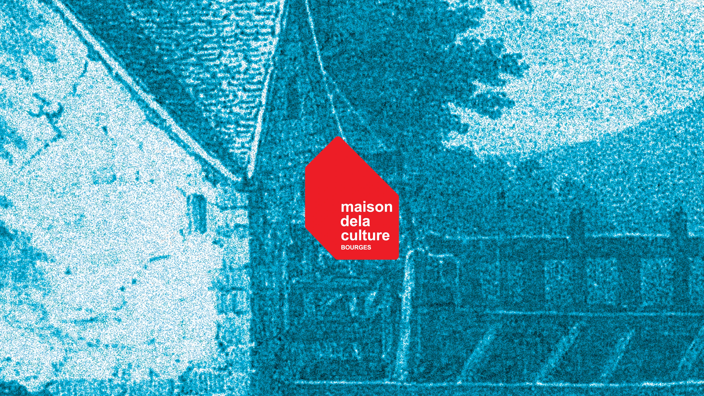
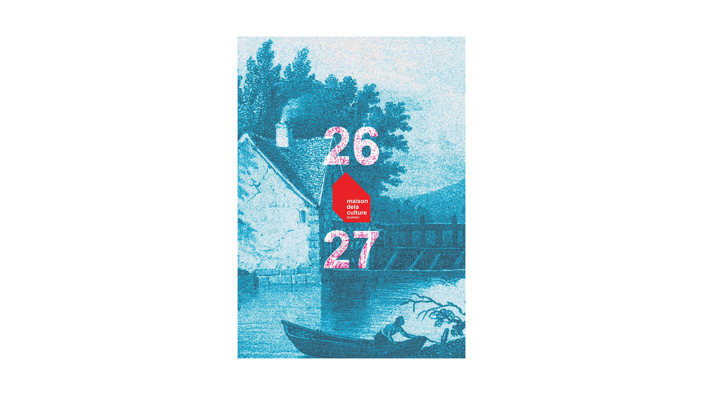
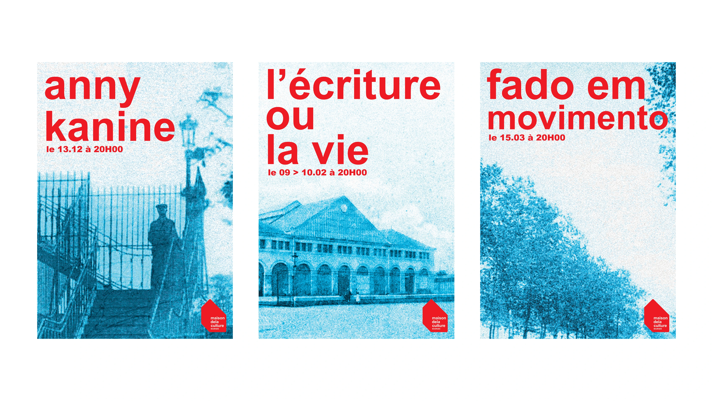
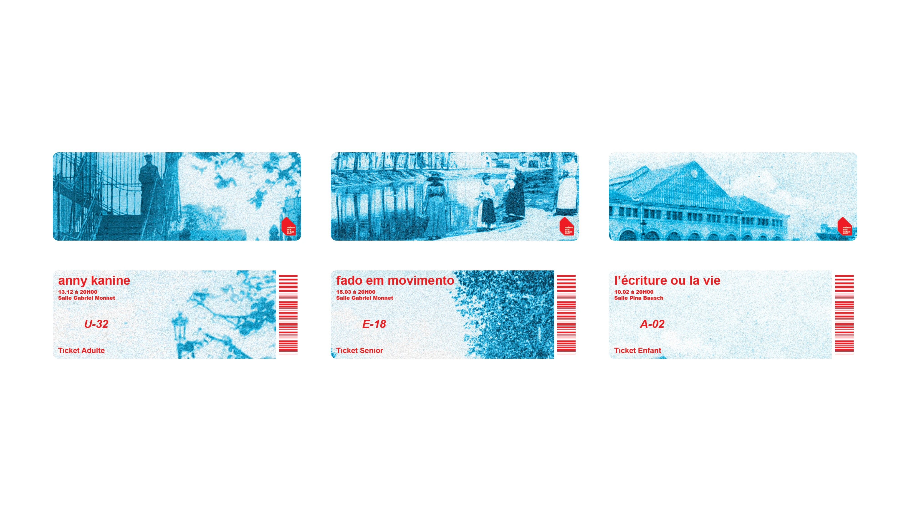
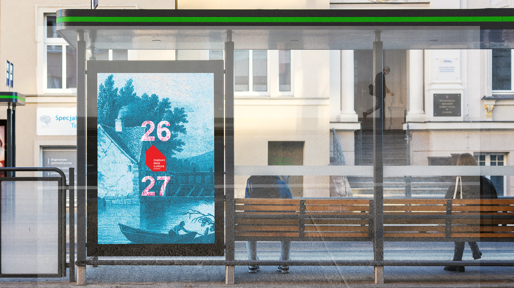
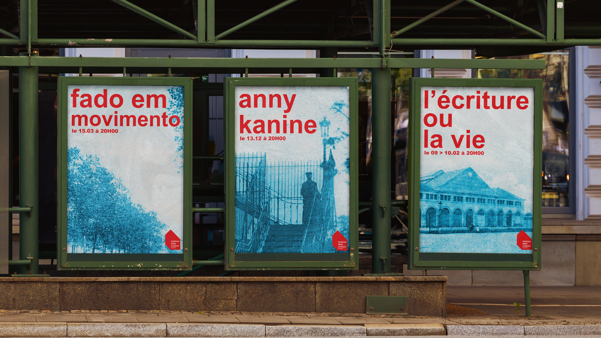
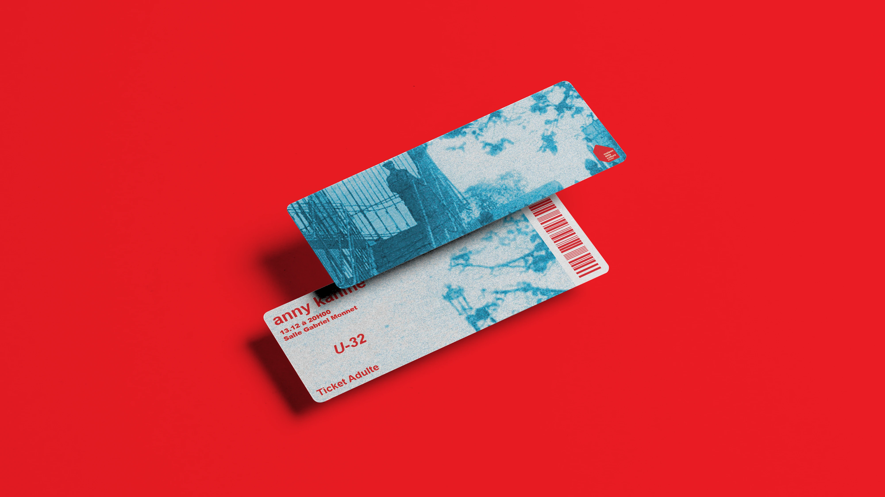
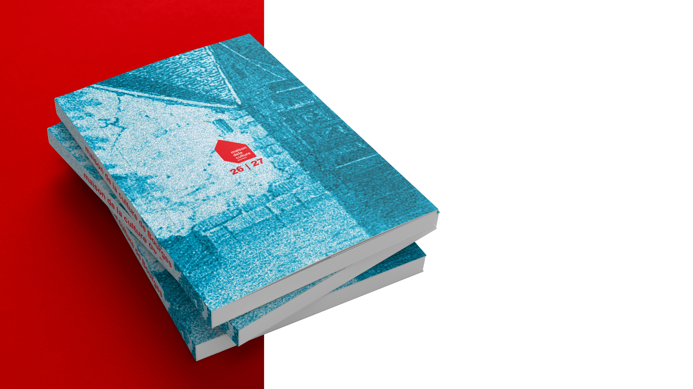
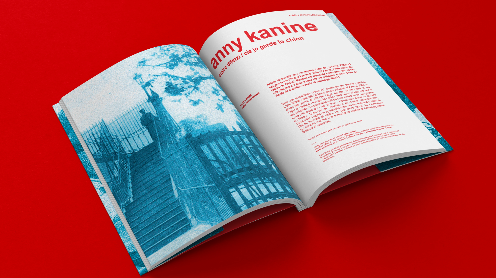
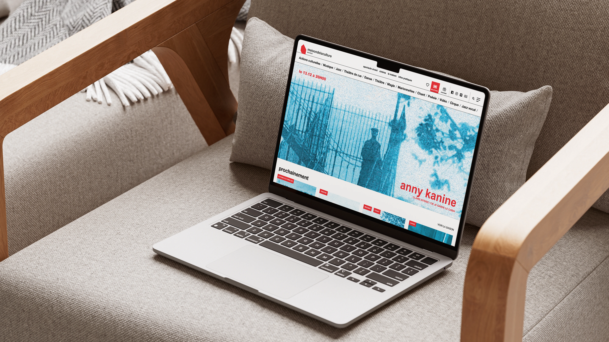
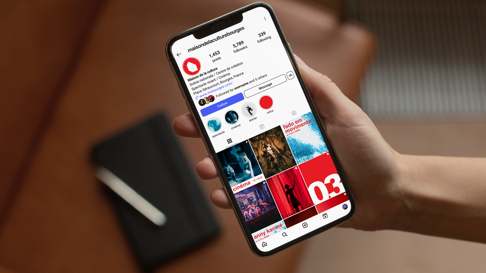